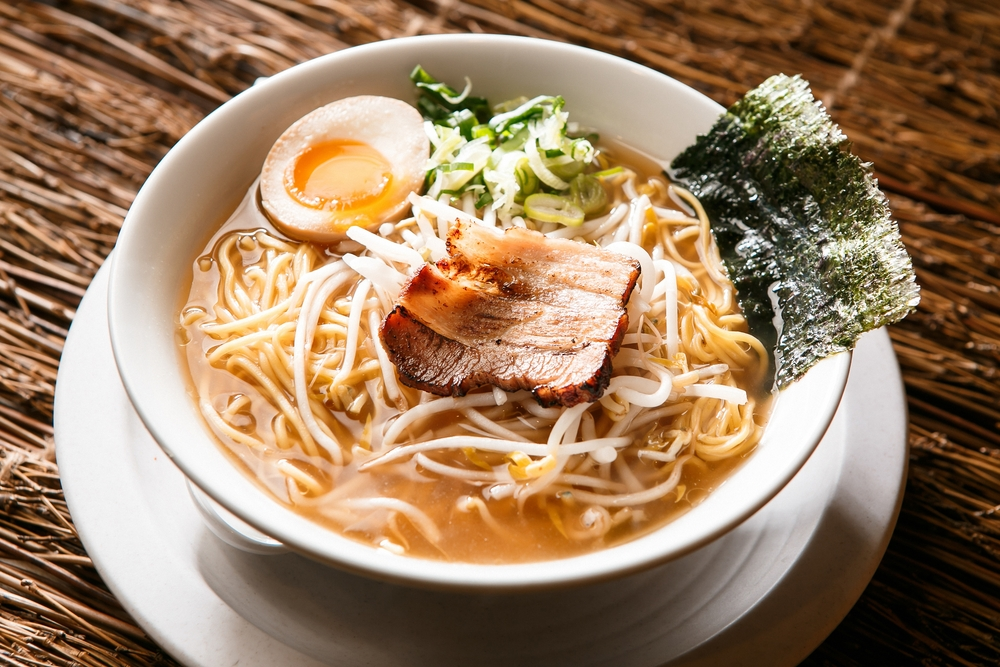
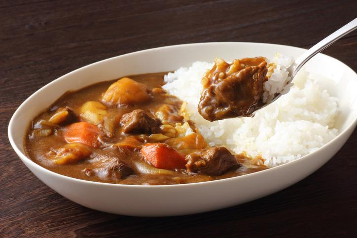
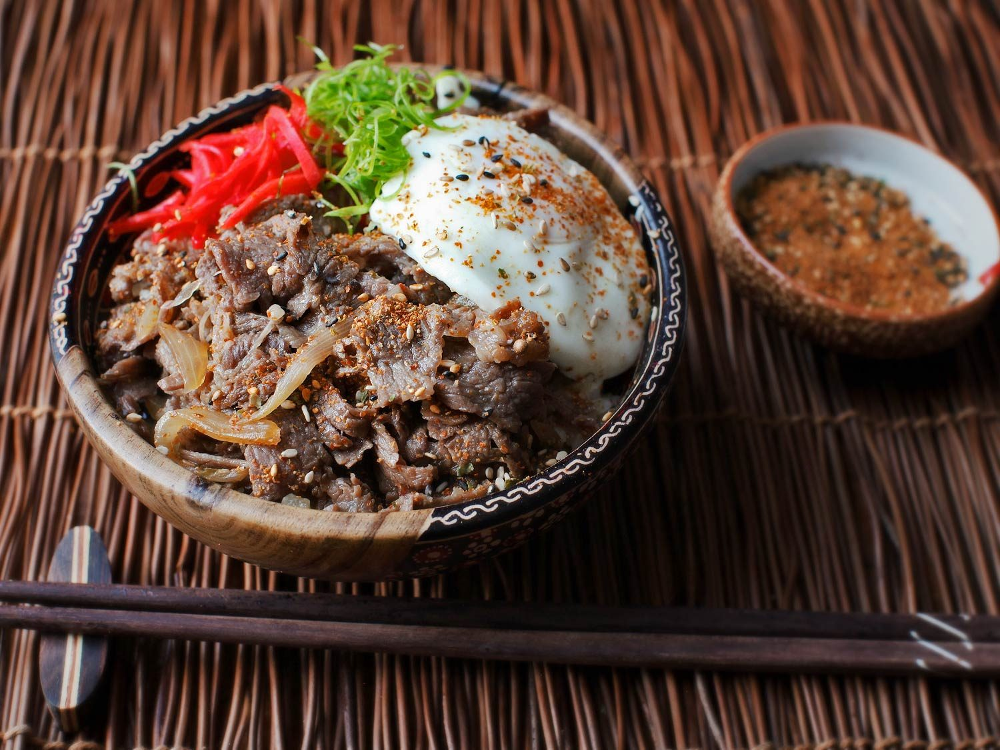

Apesar de diferente, nós brasileiros temos muito contato com comida japonesa, muito em função dos sushis e sashimis. Mas muitas das vezes não nos é explicado que a culinária japonesa consiste muito mais do que simplesmente fatias de peixe enroladas em alga.
A culinária japonesa se desenvolveu ao longo dos séculos como um resultado de muitas mudanças políticas e sociais no Japão. A culinária eventualmente passou por um processo de evolução com o advento da Idade Média, que marcou o início da expansão do elitismo com a era do domínio Xogum.
A culinária tradicional japonesa consiste em pratos preparados de arroz, sopa de misso (pasta de soja), peixe ou carne acompanhados de tsukemono (picles). Os temperos mais comuns na cozinha japonesa são o shoyu (molho de soja), o wasabi (raiz forte), o misso (pasta de soja), o karashi (mostarda), mirin e sake (bebida alcoólica a base de arroz) e dashi (caldo de peixe ou carne).
Pelo fato do Japão ser um país formado por ilhas, os japoneses criaram o hábito de utilizar o mar como fonte de alimento de onde retiram diversos tipos de peixes, moluscos e algas marinhas. O peixe é muito apreciado na culinária japonesa e consiste uma importante fonte de nutrição. Ele é o ingrediente fundamental no preparo de pratos típicos como o sashimi (peixe cru) e o sushi (pequenos bocados de arroz temperados com vinagre cobertos com fatias de peixe cru). A carne foi introduzida no Japão no século 19, até então não fazia parte da dieta tradicional japonesa. Foram criados novos pratos utilizando carne bovina, suína e de frango. Atualmente, o yakitori (espetinhos de frango grelhado) são muito populares, assim como o sukiyaki que consiste em finas fatias de carne preparadas junto com verduras e tofu (queijo de soja).
Existem muitos outros pratos que inclusive não levam peixe como ingrediente. Vamos citar alguns como exemplo.
Lámen
O lámen é um alimento japonês. Um prato de lámen normalmente é composto por um tipo de macarrão chinês, uma sopa com caldo à base de ossos de porco, peixe ou frango, e temperados com uma base tarê (molho) que da sabor ao caldo base, para a confecção da montagem do prato, e os adicionais podem variar dependendo da região do Japão e do restaurante que vende o lámen (conhecido como Lamen-Ya). É comum o uso de ingredientes como algas verdes (海苔 nori), pedaços de carne de porco (チャーシュー chāshū), brotos de bambu marinados (メンマ , 麺麻 ou 麺碼 Menma), cebolinha e naruto (massa de peixe rosa com formato de redemoinho).
 Lámen clássico japonês.Curry
O curry (ou caril/kare) japonês é um dos pratos mais populares da culinária japonesa. Geralmente é servido de três maneiras: karē raisu, karē udon e karē-pan. É geralmente mais grosso, mais doce e mais suave do que seu equivalente indiano. Uma grande variedade de vegetais e carnes são usados para fazer o caril japonês.
 Curry japonês.Gyūdon
Gyudon, é um prato japonês que consiste em uma tigela de arroz coberta com carne bovina e cebola cozidos em um molho levemente adocicado feito de dashi, shoyu e mirin. Também pode incluir shirataki e tofu.
 Gyudon.